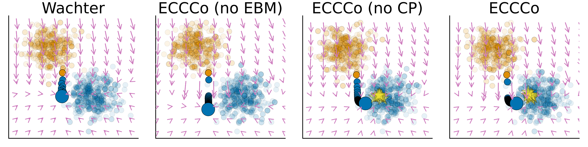

News
- On May 7-8, I’ll be presenting some of my PhD research at the DSCNext Conference Europe 2025.
- Taija, the organization that hosts software geared towards Trustworthy Artificial Intelligence in Julia, has its own website now: www.taija.org. The ecosystem keeps slowly growing. If you’re interested in contributing, please get in touch!
- In July 2024, I presented our position paper “Stop Making Unscientific AGI Performance Claims” at ICML 2024. We argue that finding patterns in latent embeddings of models like LLMs is not surprising and call for the academic community to exercise extra caution when interpreting such findings. [preprint], [blog post], [slides/poster]
- In May 2024, I was in London to present research at ECONDAT 2024 (King’s College London), The Alan Turing Institute and Imperial College London.
- In Frebruary 2024, I attended AAAI 2024 in Vancouver, Canada presenting our work on Faithful Model Explanations through Energy-Constrained Conformal Counterfactuals. If you’re around, come say hi! [preprint], [blog], [TDS], [code], [slides/poster]
Featured Visual
